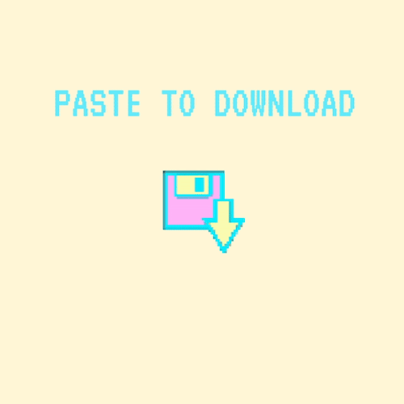

Maya Man
~ info ~
Body, Movement, Language: A.I. Sketches with Bill T. Jones
Paint me in pixels so I can dance forever
PoseNet Sketchbook
Glance Back
Be a Body
Mix Lab

Paste to Download
Surround Sound
UFO Sightings
Duly Noted
Move